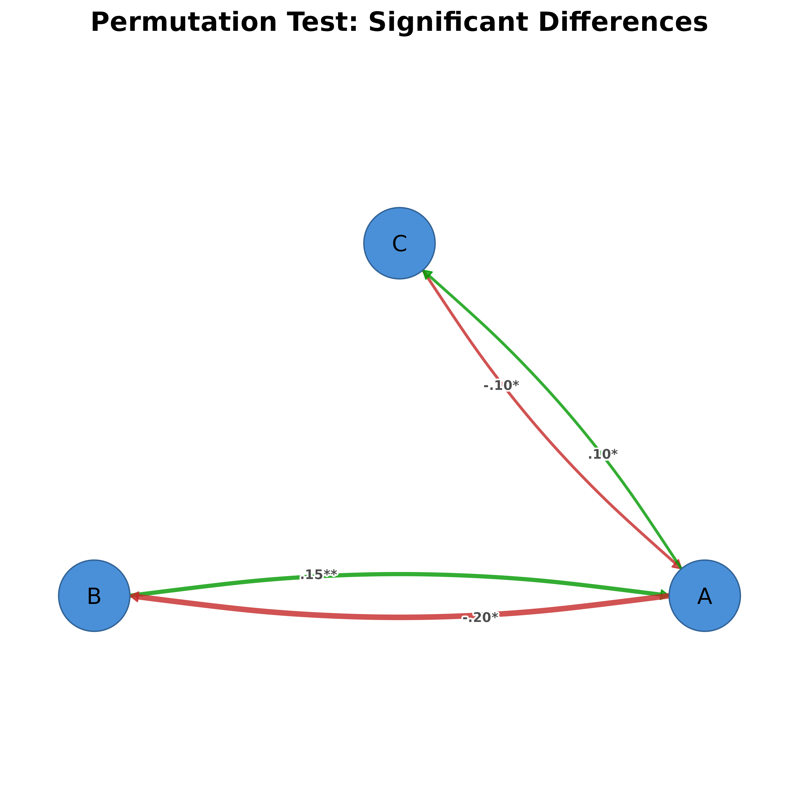

Visualizes permutation test results with styling to distinguish significant from non-significant edge differences. Works with tna_permutation objects from the tna package.
Usage
splot.tna_permutation(x, ...)
plot_permutation(
x,
show_nonsig = FALSE,
edge_positive_color = "#009900",
edge_negative_color = "#C62828",
edge_nonsig_color = "#888888",
edge_nonsig_style = 2,
show_stars = TRUE,
show_effect = FALSE,
edge_nonsig_alpha = 0.4,
...
)Arguments
- x
A tna_permutation object (from tna::permutation_test).
- ...
Additional arguments passed to splot().
- show_nonsig
Logical: show non-significant edges? Default FALSE (only significant shown).
- edge_positive_color
Color for positive differences (x > y). Default "#009900" (green).
- edge_negative_color
Color for negative differences (x < y). Default "#C62828" (red).
- edge_nonsig_color
Color for non-significant edges. Default "#888888" (grey).
- edge_nonsig_style
Line style for non-significant edges (2=dashed). Default 2.
- show_stars
Logical: show significance stars (*, **, ***) on edges? Default TRUE.
- show_effect
Logical: show effect size in parentheses for significant edges? Default FALSE.
- edge_nonsig_alpha
Alpha for non-significant edges. Default 0.4.
Details
The function expects a tna_permutation object containing:
edges$diffs_true: Matrix of actual edge differences (x - y)edges$diffs_sig: Matrix of significant differences onlyedges$stats: Data frame with edge_name, diff_true, effect_size, p_value
Edge styling:
Significant positive: solid green, bold labels with stars
Significant negative: solid red, bold labels with stars
Non-significant (when show_nonsig=TRUE): dashed grey, plain labels, lower alpha
Examples
# Mock a tna_permutation object with synthetic data
diffs <- matrix(c(0, .15, -.1, -.2, 0, .05, .1, -.05, 0), 3, 3)
rownames(diffs) <- colnames(diffs) <- c("A", "B", "C")
diffs_sig <- diffs; diffs_sig[abs(diffs) < 0.1] <- 0
perm <- list(edges = list(
diffs_true = diffs, diffs_sig = diffs_sig,
stats = data.frame(
edge_name = c("A -> B","A -> C","B -> A","B -> C","C -> A","C -> B"),
diff_true = c(.15,-.1,-.2,.05,.1,-.05),
effect_size = c(2.1,-1.5,-2.8,.4,1.2,-.3),
p_value = c(.01,.04,.001,.3,.02,.5))))
attr(perm, "level") <- 0.05
attr(perm, "labels") <- c("A", "B", "C")
class(perm) <- c("tna_permutation", "list")
plot_permutation(perm)
